Two real entry points — the CLI (pipeline.py) and the FastAPI
service (app.py) — both route through the same underlying
stage functions. The diagram below traces every conditional branch that
actually exists in the code: when the index gets rebuilt vs. reused,
how a query becomes retrieved chunks, and how those chunks become a
grounded (or explicitly refused) answer. Every box names the exact
file.py:function() that executes it.

Diagram legend colors: green = start, amber diamond = real conditional branch in the code, grey = terminal/output state, white = a function doing work.
| Node | Location | What it does |
|---|---|---|
| ENTRY | — | There are genuinely two independent code paths into this system: the CLI (pipeline.py, run once per invocation) and the HTTP service (app.py, long-running, handles many requests). Both converge on the same answer() function. |
| CHECK1 / CHECK2 | pipeline.py:22 app.py:26 | The single most important conditional in this project: should the vector index be rebuilt? The CLI checks args.rebuild OR not CHROMA_DIR.exists(); the FastAPI startup hook checks only not CHROMA_DIR.exists() (it never force-rebuilds on every restart — only when there's no index on disk at all). |
| BUILDIDX | embed_index.py:build_index() | Wipes the existing Chroma directory (shutil.rmtree) if present, then rebuilds from scratch. This is a full rebuild every time — there's no incremental/upsert path (documented as a known gap in PRODUCTION.md). |
| INGEST → CHUNK → EMBED → INDEXED | ingest.py / chunking.py / embed_index.py | The four stages run strictly in sequence, each one's output feeding the next — no branching inside this part of the pipeline. This is deliberate: project 01's whole design point is that each stage is independently inspectable (each file has its own if __name__ == "__main__" block for exactly this reason). |
| RETRIEVE | retrieve.py:retrieve() | Embeds the incoming query with the same embedding model used at index time, then does similarity_search_with_score(query, k) against Chroma. k defaults to RETRIEVAL_K=4 from config.py but can be overridden per-call. |
| GROUNDCHECK | generate.py (SYSTEM_PROMPT) + tests/test_pipeline.py | This is not a code-level if/else — it's the model's own judgment, shaped by the system prompt's explicit instruction to refuse when context doesn't contain the answer. The code doesn't branch here; what's tested is that the model's behavior branches correctly (test_generation_is_grounded_and_refuses_out_of_scope asserts refusal language appears for an out-of-corpus question). |
| OUTFORMAT | pipeline.py:main() / app.py:query() | Three possible output shapes depending on entry point and flag: CLI human-readable text (default), CLI JSON (--json), or the HTTP path's Pydantic-validated JSON response body. |
CLI invoked with no flags → CHECK1 is No (index doesn't exist) → full BUILDIDX chain runs (ingest→chunk→embed→index) → then ANSWER1 proceeds normally.
CHECK1 is Yes this time (index already on disk, no --rebuild) → skips straight past the entire ingest/chunk/embed chain → retrieval finds a real match → model answers grounded, citing the source doc.
Retrieval still returns something (Chroma always returns the top-k nearest vectors, even if none are relevant) — the branch that matters is entirely inside the model's response, per the system prompt's explicit instruction.
... → LLMCALL → GROUNDCHECK(No) → REFUSED → OUTFORMAT → TEXTOUTBypasses the CHECK2 conditional entirely — /reindex calls build_index() unconditionally, regardless of whether an index already exists (this is the one place a rebuild can be forced on a running service without restarting it).
pipeline.py) and a FastAPI service (app.py).A single hash over the whole corpus means any single-document change invalidates it — at 10M docs you'd re-embed everything for a one-line edit. I'd replace the global hash with per-document content hashes stored alongside each embedding, diff the corpus against that manifest, and only re-embed the delta. That turns an O(n) full-rebuild into an O(changed) incremental update, and is the actual design most production RAG systems (e.g. incremental Chroma/pgvector upserts) use.
Retrieval still returns the top-k nearest vectors — cosine similarity always returns something, even if everything is far away. The refusal check runs after retrieval, comparing the best similarity score against a threshold, before the context ever reaches the generator. I put it there rather than relying on prompt instructions ('say I don't know if...') because LLMs are unreliable at self-policing groundedness — a code-level gate is deterministic and testable; a prompt instruction is a suggestion the model can ignore under adversarial or ambiguous input.
Embedding the query itself is usually the bottleneck — a local sentence-transformer call is tens of milliseconds on CPU and doesn't batch well under bursty concurrent load. I'd move query embedding to a small dedicated service with dynamic batching (or a GPU-backed endpoint), add an LRU cache keyed on normalized query text for repeat queries, and separate retrieval (cheap, sub-10ms with an ANN index) from generation (expensive, streams). Chroma itself, embedded in-process, would also need to move to a networked vector DB with replicas to survive that QPS without single-node contention.
As built, there's no lock around the rebuild — two concurrent 'corpus changed' detections could both start rebuilding, doubling embedding cost and potentially leaving the on-disk Chroma collection in an inconsistent state if both writers interleave. The real fix is a rebuild lock (a lockfile or a DB-backed advisory lock) so only one rebuild runs at a time and late arrivals either wait or no-op once they see the hash already matches — this is a documented, not silently patched, gap in the current implementation.
I'd separate retrieval quality from generation quality. Retrieval: hit-rate@k and MRR against a labeled query→relevant-doc set (this is exactly what project 04's chunk-size sweep measures for a related pipeline). Generation: faithfulness (does the answer only use claims present in the retrieved context — this project's own ground-check is a cheap proxy for that) and answer relevance, ideally via a second, independent judge model (see project 02's AND-gate pattern) rather than trusting the same model's self-report.